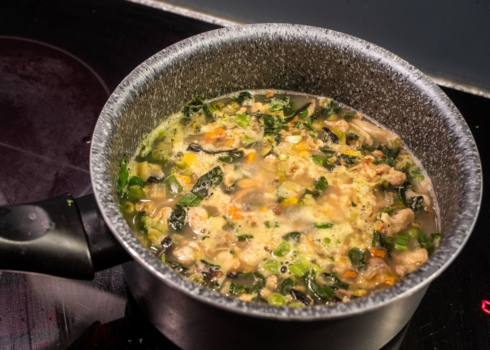

Dehydrated Chicken Soup

Dehydrated chicken soup is a popular and convenient meal that can be enjoyed by many, especially those who enjoy the taste of chicken and vegetables in a warm and comforting soup.
Ingredients
- 3/4 cup Dehydrated Carrots
- 2 tbsp Dehydrated Celery
- 3 cups Chicken Stock
- 2 tbsp Olive Oil
- 2 teaspoons minced garlic
- 1/2 tsp Dried Italian Herbs
- 1/2 cup Dehydrated Onion
- 1 slice Dehydrated Elephant Garlic
- 1 1/2 cups Whole Wheat or regular Egg Noodles
- 1/2 pound Dehydrated Chicken
- 1 pinch Salt and Pepper to taste
Directions
- Use boiled water to re-hydrate the dehydrated ingredients
- Drain. In a saute pan over medium heat, add the olive oil.
- Then add onions and celery. Cook for about 5 minutes.
- In a soup pot, add the chicken stock.
- Finely crumble the garlic and add to soup pot along with the carrots, egg noodles, Italian herbs, celery and chicken
- Season with salt and pepper to taste. Then simmer for an additional 8 minutes.
You should now have a delicious dehydrated chicken soup, enjoy!